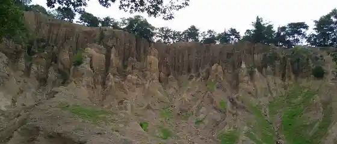
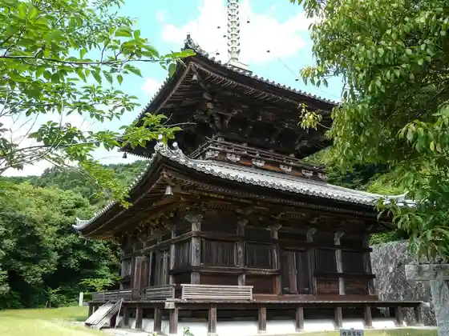
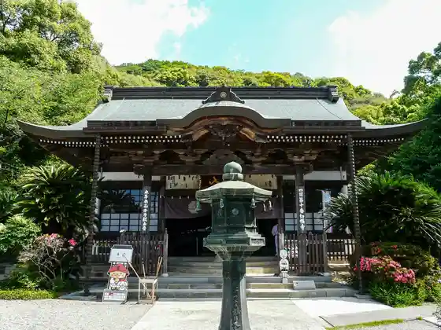
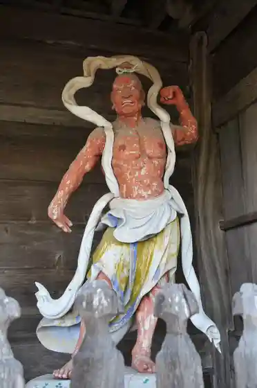

Awa no Dochu
Awa, Tokushima · Official / source link
Awa no Dochu Kuni no Tennenkinembutsu
Awa, Tokushima · Official / source link

Setsu Hata Tera Oto
Awa, Tokushima · Official / source link

Dai 10 Ban Fudasho Setsu Hata Tera
Awa, Tokushima · 0883-36-3010 · Official / source link

Kumagaya Tera Nio Mon
Awa, Tokushima · Official / source link

Dai 8 Ban Fudasho Kumagaya Tera
Awa, Tokushima · 088-695-2065 · Official / source link
Dai 7 Ban Fudasho Juraku Tera
Awa, Tokushima · 088-695-2150 · Official / source link
Dai 9 Ban Fudasho Horin Tera
Awa, Tokushima · 088-695-2080 · Official / source link
Dochu Soyo Kaze Hiroba
Awa, Tokushima · Official / source link
Cafe Yomosugara
Awa, Tokushima · Official / source link
Ei
Awa, Tokushima · Official / source link
Yakitori Tori Kichi
Awa, Tokushima · Official / source link
Tateishi
Awa, Tokushima · Official / source link
Toki
Awa, Tokushima · Official / source link
Gosho Sha no Mori
Awa, Tokushima · Official / source link
Hana Shi
Awa, Tokushima · Official / source link
Ten Kichi Udon Awa Mise
Awa, Tokushima · Official / source link
Matsuo Gyoza Mise
Awa, Tokushima · Official / source link
Itten Taraiudon
Awa, Tokushima · Official / source link
Serufu Udonkakashi
Awa, Tokushima · Official / source link
Asuka
Awa, Tokushima · Official / source link
Hiraoka Inshokuten
Awa, Tokushima · Official / source link
Hibi Shokusai
Awa, Tokushima · Official / source link
Awa Koryu Bosai Kyoten Shisetsu Aeruwa
Awa, Tokushima · 0883-36-8739 · Official / source link
AWA Blueberry Farm
Awa, Tokushima · 0883-35-3084 · Official / source link
Dochu Land Shin Onsen
Awa, Tokushima · 0883-35-3431 · Official / source link
Dochu Dondon
Awa, Tokushima · 0883-35-3808 · Official / source link
Donari Chuo Park
Awa, Tokushima · Official / source link
Gosho Shrine (Fukikoshi)
Awa, Tokushima · Official / source link
Gosho Shrine
Awa, Tokushima · Official / source link
Inu Haka Daishido
Awa, Tokushima · Official / source link
J Kurashikkugorufu Club
Awa, Tokushima · 088-695-5215 · Official / source link
Joko Shuen Densetsu Chi
Awa, Tokushima · Official / source link
Kakihara Seki
Awa, Tokushima · Official / source link
Kodaimoji (Namazu no Kahi)
Awa, Tokushima · Official / source link
Roadside Station (Donari) Motenashi no Kan
Awa, Tokushima · 088-695-5405 · Official / source link
Midori no Oka Supotsu Park
Awa, Tokushima · Official / source link
Miki Budo Sono
Awa, Tokushima · 088-695-4810 · Official / source link
Miyagawa Nai Damu Park
Awa, Tokushima · Official / source link
Nishikigoi no Seri City
Awa, Tokushima · 0883-36-4998 · Official / source link
Nisshin Sakerui Taiko Shuzo Ba
Awa, Tokushima · 088-695-3238 · Official / source link
NPO Hojin Serapii Joba Tekuteku Ikusei Kai
Awa, Tokushima · 090-1007-9553 · Official / source link
Taiko Saka
Awa, Tokushima · Official / source link
Tennen Onsen Gosho no Sato
Awa, Tokushima · 088-695-4615 · Official / source link
Tsuchimikado Joko Angu Ato
Awa, Tokushima · Official / source link
Shiki no Niwa Shoku Sei
Awa, Tokushima · 090-2891-8604 · Official / source link
Yoshino Uota Park
Awa, Tokushima · Official / source link